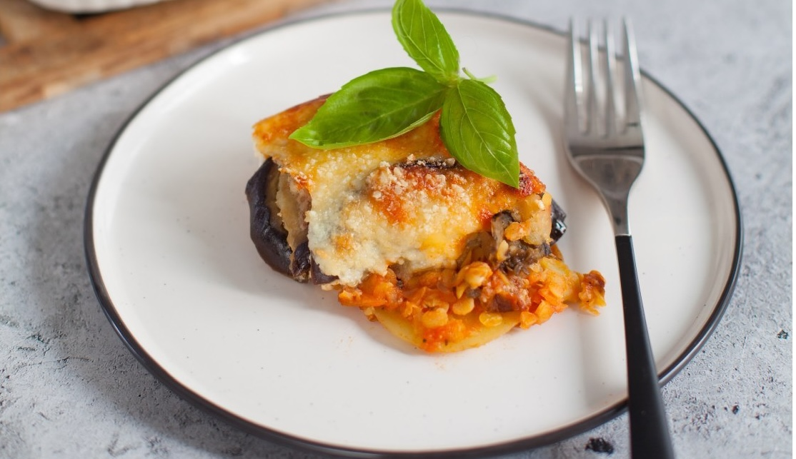

Мы обожаем мусаку. Хотя будем честны, любая мусака — это довольно-таки калорийное и трудоемкое блюдо. Поэтому и готовится оно, как правило, по каким-то особым поводам или на выходных. Сегодня мы хотим вас познакомить с менее калорийной и чуть менее затратной по времени версией. Она без фарша, вместо него мы используем чечевицу, причем красную, которую не нужно предварительно отваривать. Впрочем, вы можете взять и бурую, заранее ее отварив.
В этом рецепте мы отказались от обжаривания овощей на сковородке, вместо этого мы их запекаем — так полезнее и быстрее. Впрочем, чтобы ускорить процесс, особенно если мусака планируется большого размера, картофель можно отварить в мундире, пока запекается баклажан.
А еще у нас вместо классического соуса бешамель, который также требует времени и навыков приготовления, более легкая его версия на основе йогурта и рикотты.
Для нарезки овощей рекомендуем использовать мультислайсер Borner; если его нет, можно нарезать кружочками вручную.
Процесс приготовления мусаки можно упростить и ускорить, приготовив овощи накануне: переложить в контейнеры и убрать в холодильник на ночь.